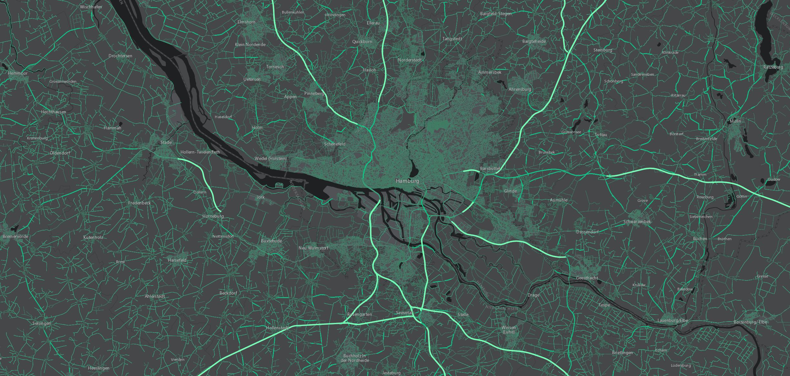

ArcGIS ❤ Open Data
new ArcGIS.com feature
Free for Organizations
Whatisthisthang?
expose "datasets"
Feature Services
Map Serivce Layers w/ query
but not...
Maps or Map Services
Let's talk Dev!
javascripty workflowy
code coverage reporting
end to end testing!
WOOT!